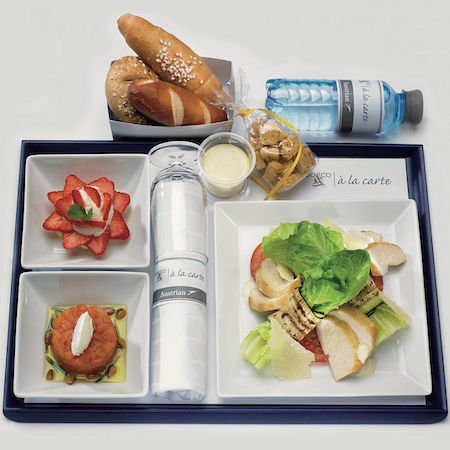

Traditional Meal Trays for Suborbital Flights
I believe that space travel will one day become as common as airline travel is today. I’m convinced, however, that the true future of space travel does not lie with government agencies — NASA is still obsessed with the idea that the primary purpose of the space program is science — but real progress will come from private companies competing to provide the ultimate adventure ride, and NASA will receive the trickle-down benefits.